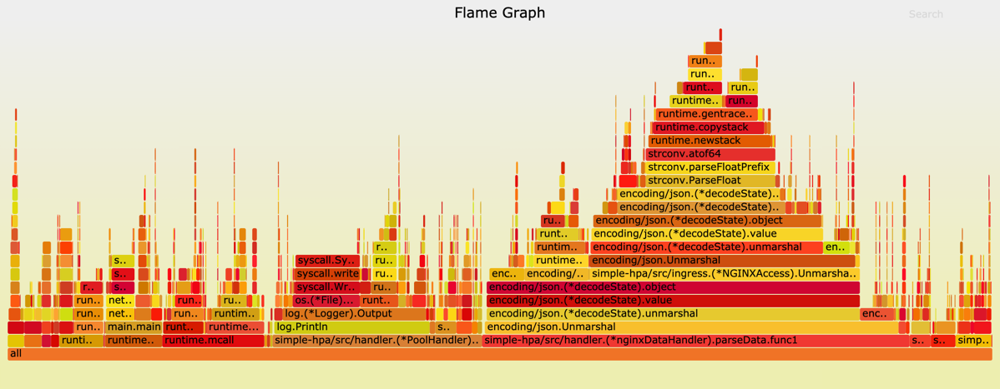
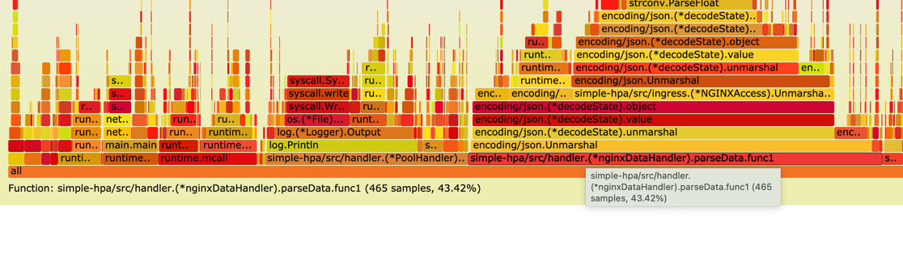

title: 在go中查看代码的内存及cpu使用情况 (一)
date: 2021-09-10 23:23:13
tags:
在我们的开发过程中, 开发者很容易忽略一个问题。我们代码使用的内存堆栈的大小, 我们是在什么地方使用了较大的内存, cpu
的消耗在什么地方。以下我就针对我之前写的一个服务对我代码中内存和cpu进行分析。
首先这种方式仅限于在go中使用,对其他的语言不适用。
在我们的代码main中引入
import _ "net/http/pprof"
func main() {
//pprof
go func() {
http.ListenAndServe("0.0.0.0:6060", nil)
}()
}
启动之后我们访问localhost:6060 我们就可以看到我们内存堆栈的信息。如下图
allocs： 过去所有内存分配的样本
block： 导致同步原语阻塞的堆栈跟踪
cmdline： 当前程序的命令行调用
goroutine： 所有当前 goroutine 的堆栈跟踪
heap：活动对象的内存分配示例。您可以指定 gc GET 参数以在获取堆样本之前运行 GC。
mutex： 竞争互斥锁持有者的堆栈跟踪
profile：CPU 配置文件。您可以在 seconds GET 参数中指定持续时间。获取配置文件后,使用 go tool pprof 命令调查配置文件。
threadcreate： 导致创建新操作系统线程的堆栈跟踪
trace：当前程序的执行轨迹。您可以在 seconds GET 参数中指定持续时间。获取跟踪文件后,使用 go tool trace 命令调查跟踪。
以下我们展示一下, 在go中展示火力图 看起来很炫酷。

我们来看一下怎么做的首先我们先安装uber 开发的go-torch
go get github.com/uber/go-torch
这个需要依赖一个flamegraph https://github.com/brendangregg/FlameGraph
brew install flamegraph
# 接下来我们生成我们的火力图吧
go-torch -u http://10.10.13.118:31795/debug/pprof
#执行完以上命令会生成一个svg文件打开当前文件我们就可以看到火力图了

我们可以从红色的框可以看到具体内存使用的地方在哪里。
simple-hpa/src/handler.(*nginxDataHandler).parseData.func1
这个函数使用了43.42%